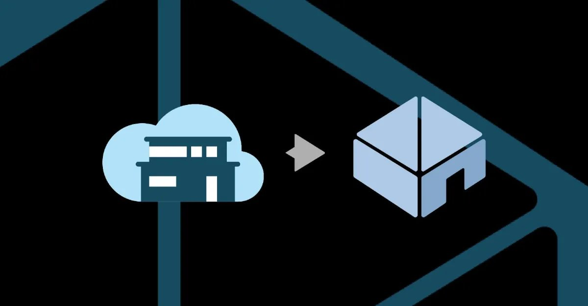

Home Assistant troca “Cloud” por “Link” e prepara hub mais simples
Fundador diz que “as big techs estragaram a nuvem”; serviço segue a US$ 6,50 por mês e, segundo ele, sem acesso aos dados.

A plataforma de código aberto para casa inteligente Home Assistant renomeou seu serviço Home Assistant Cloud para Home Assistant Link. “As big techs estragaram a nuvem, então estamos fora”, disse o fundador Paulus Schoutsen ao The Verge.
A mudança é sobretudo simbólica: os recursos continuam os mesmos, com melhorias de velocidade e confiabilidade. Por US$ 6,50 por mês ou US$ 65 por ano, o Link permite acessar a instalação de fora de casa e ativar recursos que dependem da internet, como integração com Alexa e Google, conversão de texto em voz e backups criptografados. O sistema em si roda localmente.
Schoutsen diz que o serviço, operado pela parceira Nabu Casa, não tem acesso aos dados dos usuários, já que o tráfego é criptografado, e que 60% do lucro vai para a Open Home Foundation, entidade sem fins lucrativos que mantém o projeto.
O plano é tornar a plataforma mais acessível, com painéis mais simples, configuração mais intuitiva, uso de IA generativa para reduzir a complexidade e um novo hub mais amigável no ano que vem. Ele também cobra dos fabricantes controle local por padrão e padrões abertos como Matter, Zigbee e Z-Wave.